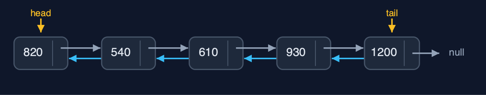
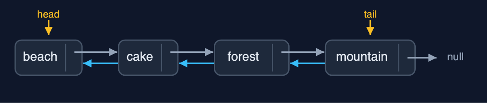
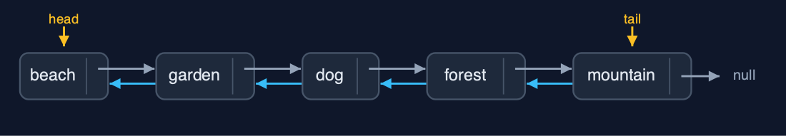
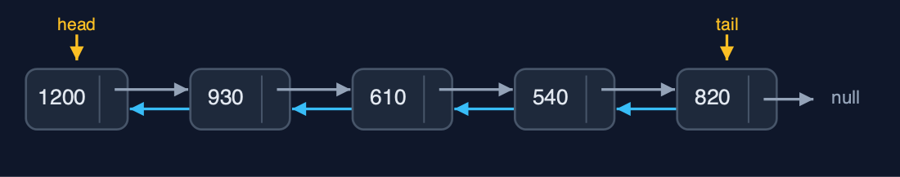

Doubly Linked List (Generic), Explained
In one sentence
A generic doubly linked list is the doubly linked list with a type parameter: Node<T> with prev, data and next, head and tail, equals for matching, and the same O(1) work at both ends.
The picture

GenericDoublyLinkedList<Photo>: each Node<Photo> has prev, data and next; head and tail at the ends
The everyday idea
Picture a train whose carriages are coupled front and back, and can carry any cargo: passengers, coal, cars. The couplings work the same whatever is inside. A guard can walk either way, carriages can be added or removed at either end, and to ask whether a carriage carries "a dog photo of 610 kilobytes" you look at the cargo's description, not at the carriage.
The 5 acts
Act 1: One class, any element type
GenericDoublyLinkedList<String> holds the five names, GenericDoublyLinkedList<Integer> the sizes in kilobytes, displayed here backward from the tail, and GenericDoublyLinkedList<Photo> records of our own. All three are built with insertAtEnd through the tail, and walked by the same code in either direction.

Sizes as Integers, linked both ways Here are the sizes. Integers, linked both ways, with head and tail.
What the demo printed:
<String>: head -> beach <-> cake <-> dog <-> forest <-> mountain <- tail
<Integer>: tail -> 1200 <-> 930 <-> 610 <-> 540 <-> 820 <- head
<Photo>: head -> beach 820KB <-> ... <-> mountain 1200KB <- tailAct 2: Node<T>: prev, a reference to the data, next
Each Node<Photo> holds three references: prev, data and next. The head's prev is null, and its next leads to the node holding the cake photo. The tail's next is null, and its prev leads to the forest. data refers to the Photo object itself; the node holds no copy.

The ends: null before the head, null after the tail Here are the two ends. Nothing before the head, nothing after the tail.
What the demo printed:
head.data = beach 820KB, head.prev = null, head.next.data = cake 540KB
tail.data = mountain 1200KB, tail.prev.data = forest 930KB, tail.next = nullAct 3: Both ends, and equals in the middle
Inserting "airport" at the beginning and "river" at the end walks nowhere: 6 pointer changes through head and tail. A separately made Photo("dog", 610) is found at position 3 after 4 comparisons, because a record's equals compares name and size. insertAtPosition(3, garden) sets 4 pointers, and deleteByKey(new Photo("cake", 540)) compares 3 nodes and unlinks cake with 2 pointer changes.

After the changes: airport ... river, with garden in and cake out Here is the album now.
What the demo printed:
insertAtBeginning and insertAtEnd: 0 steps, 6 pointer changes
search(new Photo("dog", 610)) = position 3: 4 comparisons; equals compares name and size
insertAtPosition(3, garden 760KB): 4 pointer changes
deleteByKey(new Photo("cake", 540)) = true: 3 comparisons, 2 pointer changesAct 4: Deleting at the ends through head and tail
Deleting "airport" at the beginning and "river" at the end uses head and tail directly: no walking, 2 pointer changes each. Deleting from an empty list is refused as an underflow.

Both ends removed in O(1) Here is the album without its two ends.
What the demo printed:
deleteAtBeginning() = airport 700KB, deleteAtEnd() = river 880KB: 0 steps, 4 pointer changes
an empty list, deleteAtBeginning(): underflow: the list is emptyAct 5: The same algorithm for every type
reverse swaps each node's prev and next and then swaps head and tail: 12 pointer changes for five sizes, and the same 12 for five names. Generics change the element type, not the algorithm or its cost. Java's LinkedList<E> is a generic doubly linked list of exactly this kind.

The reversed sizes Here are the reversed sizes.
What the demo printed:
<Integer> reverse(): 12 pointer changes; head -> 1200 <-> 930 <-> 610 <-> 540 <-> 820 <- tail
<String> reverse(): 12 pointer changes, the very same code
already in Java: java.util.LinkedList<E>, a generic doubly linked list with head and tailThe operations in code
Insertion at the end
/** Insertion at the end, through the tail pointer: no traversal. O(1). */
public Node<T> insertAtEnd(T data) {
Node<T> newNode = new Node<>(data);
if (tail == null) {
head = newNode;
tail = newNode;
steps.pointer(2);
} else {
newNode.prev = tail; // the new node's prev is the old last node
tail.next = newNode; // the old last node's next is the new node
tail = newNode;
steps.pointer(3);
}
return newNode;
}new Node<>(data) needs no cast, unlike a generic array. Then the tail's three pointers, exactly as in the String-only list.
Deletion by key with equals
/** Deletion by key: search for the first node holding {@code key}, then unlink it. O(n). */
public boolean deleteByKey(T key) {
for (Node<T> current = head; current != null; current = current.next) {
steps.compare();
if (current.data.equals(key)) {
deleteNode(current);
return true;
}
steps.step();
}
return false;
}current.data.equals(key) compares contents, so a separately made Photo("cake", 540) is found; deleteNode then unlinks it with two pointer changes.
Deletion of a node
/**
* Deletes a node already reached: its predecessor's {@code next} and its successor's
* {@code prev} are set past it (or head and tail, at the ends). O(1): the node knows its
* predecessor, so no search is needed.
*/
public void deleteNode(Node<T> node) {
if (node.prev == null) {
head = node.next; // deleting the first node
} else {
node.prev.next = node.next;
}
if (node.next == null) {
tail = node.prev; // deleting the last node
} else {
node.next.prev = node.prev;
}
steps.pointer(2);
}The O(1) unlink every deletion ends in: neighbours pointed at each other, head or tail moved at the ends.
The operations, and what they cost
| Operation | What it does | Time: best / average / worst | Extra space | Steps counted in the demo |
|---|---|---|---|---|
| Display forward / backward | Follow next from head, or prev from tail | O(n) / O(n) / O(n) | O(1) | 5 steps each way for 5 photos |
| Insert / delete at beginning or end | Through head or tail: 3 pointers to insert, 2 to delete | O(1) / O(1) / O(1) | O(1) | 0 steps |
| Insert at position | Walk to the node before, then set 4 pointers | O(1) at the ends / O(n) / O(n) | O(1) | 4 pointer changes |
| Delete a node already reached | node.prev.next = node.next; node.next.prev = node.prev | O(1) / O(1) / O(1) | O(1) | 2 pointer changes |
| Delete by key / search | Walk comparing with equals, then unlink | O(1) / O(n) / O(n) | O(1) | 3 comparisons, 2 pointer changes |
| Count / get | Walk from head | O(n) / O(n) / O(n) | O(1) | one step per node |
| Reverse | Swap prev and next in every node, then head and tail | O(n) / O(n) / O(n) | O(1) | 12 pointer changes for 5 nodes |
Compared with related structures
The generic doubly linked list against its neighbours (n nodes):
| Property | Generic doubly list | Doubly list of String | Generic singly list |
|---|---|---|---|
| Element types | any T | String only | any T |
| Insert / delete at the end | O(1) | O(1) | O(n) |
| Delete a node already reached | O(1) | O(1) | O(n) |
| Walk backwards | yes | yes | no |
| Pointers per node | 2 | 2 | 1 |
| Java's own | LinkedList<E> | LinkedList<String> |
The verdict
This is java.util.LinkedList<E>, built by hand; use the library one in real code, and choose it over ArrayList<E> only for heavy work at both ends or at nodes already reached.
How to recognise it in code you did not write
class Node<T> { Node<T> prev; T data; Node<T> next; }.headandtailfields in a generic list class.
Where you have already met this
java.util.LinkedList<E>andDeque<E>.- Browser history and music playlists holding page or track objects.